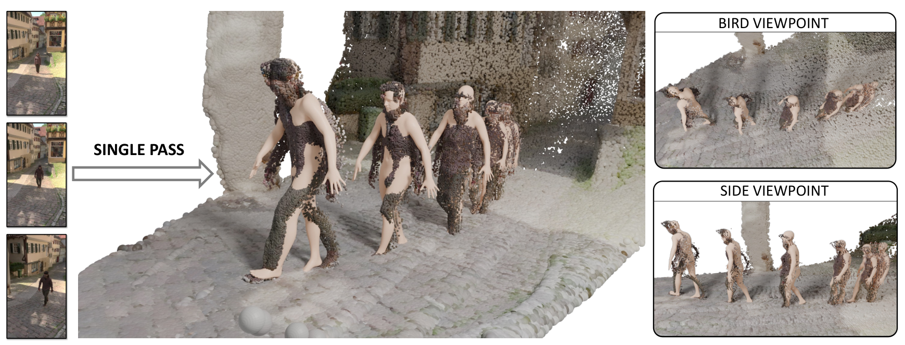
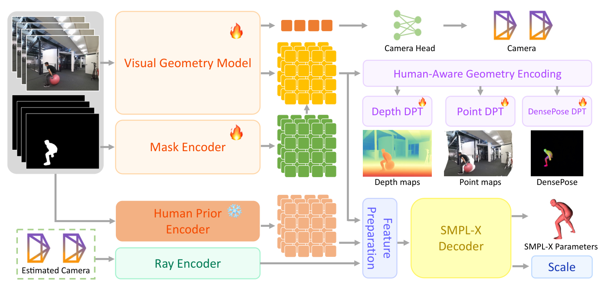
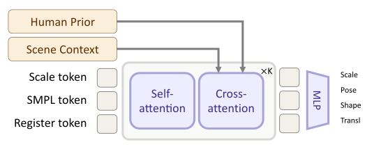
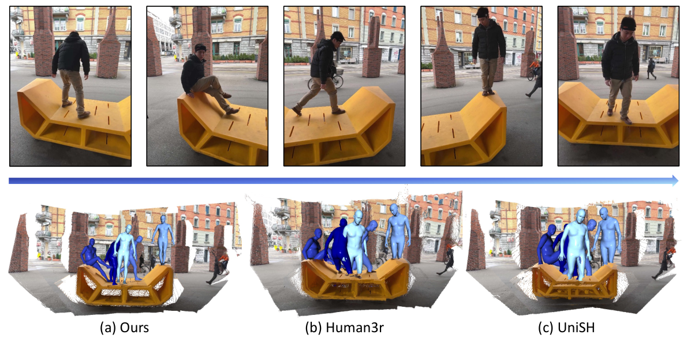
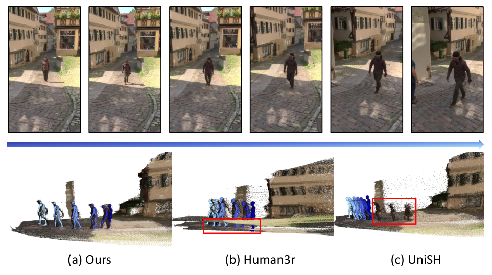
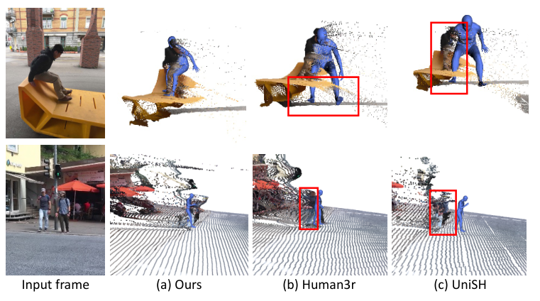
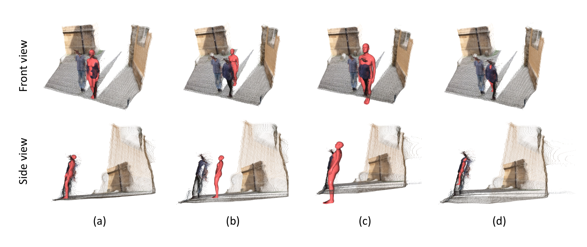
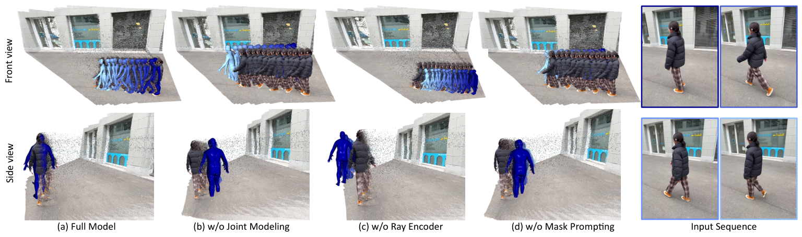

SHOW(arXiv 2606.27720,2026-06-26,UPenn GRASP Lab,Lingjie Liu 组)提出用掩码提示(mask-as-prompt)驱动的视觉几何基础模型,把「人体网格恢复(HMR)」与「前馈 3D 场景重建」耦合进统一度量空间(unified metric space)——从单目以人为中心的视频出发,一次前馈同时输出场景(相机/深度/点图)与所有人体的 SMPL-X 网格,且人体天然落在场景坐标系下、尺度一致。
核心贡献四个:

论文开篇论点:现实中人动作改变环境、环境影响行为,人与场景共存于同一物理世界,其空间/物理关系是理解人类行为的基础(AR/VR、游戏、机器人)。但既有管线大多把人与场景当两个独立目标分别估计,再事后对齐到公共坐标系——这条「先分后合」路线有三个结构性失败模式:
依赖启发式 body anchor、检测框估计或 post-hoc 对齐。Human3R 靠头部检测定位人——头被遮挡或姿势怪异时直接预测失败;UniSH 靠bbox 提示——多人紧密交互时框互相重叠无法消歧。
场景几何没有作为人体重建的主动约束。人/景各自看着都合理,放到一起尺度、位置、物理交互对不上——尤其是单目视频,深度/尺度歧义让「身体是否放对了地方」无从判断。
视觉几何模型(如 VGGT)的点图按自身归一化约定输出,与 SMPL-X 人体模型的度量尺度不匹配;直接拿原始 VGGT 特征引导人体尺度/位置估计,尺度恢复困难(消融:w/o pretrain alignment HS-CF₅ 从 9.44 恶化到 38.51)。
关键假设:分割掩码(而非检测框/头部位置)是最鲁棒的人体定位提示——遮挡、部分可见、多人重叠下依然保持实例区分度;且基础模型的几何先验可以被「人体语义」调制,使场景点图带上度量可对齐的人体线索。
假设失效条件:①掩码本身质量差(SAM 分割失败/漏检)时提示失效;②人体在画面中占比极小或尺度极端变化时(论文 Limitation 自认),掩码提示的像素证据不足;③真实域与合成训练域(BEDLAM2.0)差异过大时,sim-to-real 鸿沟显现。
给定单目视频 $\mathcal{I}=\{I_t\}_{t=1}^{T}$,目标:单次前馈内在共享 3D 世界中同时重建人与场景。每帧预测归一化部分 3D 点图 $\bar{\mathbf{P}}_{t}=\{\bar{\mathbf{p}}_{t,u}\}_{u\in\Omega}$($\Omega$ 为像素集合,$\bar{\mathbf{p}}_{t,u}\in\mathbb{R}^3$),并在同一坐标系恢复所有可见人体 $\mathcal{H}_{t}=\{H_{t,i}\}_{i=1}^{N_t}$。每个人体实例 $H_{t,i}=\{\theta_{t,i},\beta_{t,i},\tau_{t,i},s_{t,i}\}$,标量 $s_{t,i}$ 把归一化点图映射到人体度量尺度:$\mathbf{P}_{t,i}=s_{t,i}\bar{\mathbf{P}}_{t}$——这个尺度因子是让重建人体与场景几何对齐的枢纽。
| 符号 | 含义 | 维度/取值 |
|---|---|---|
| $I_t$ / $M_t$ | 第 $t$ 帧图像 / 人体前景掩码(SAM 生成) | $H\times W$ / 二值 |
| $\bar{\mathbf{P}}_{t}$, $\bar{\mathbf{p}}_{t,u}$ | 归一化(部分)3D 点图 / 像素 $u$ 的归一化 3D 点 | $H\times W\times 3$ |
| $H_{t,i}$ | 人体实例(pose/shape/translation/scale 四元组) | $\{\theta,\beta,\tau,s\}$ |
| $\theta_{t,i}$ / $\beta_{t,i}$ | SMPL-X 姿态(身体关节角)/ 形状(PCA 系数) | 55×3 / 10 |
| $\tau_{t,i}$ | 全局平移(世界系放置) | $\mathbb{R}^3$ |
| $s_{t,i}$ | 尺度因子:归一化点图 → 人体度量尺度 | 标量,softplus 激活 |
| $F_t^{g$ / $F_t^m$} | VGGT 几何特征 / mask encoder 掩码特征 | patch 序列 |
| $\tilde{F}_t^g$ | 人感知几何特征(融合后) | patch 序列 |
| $E_{msk}$ / $E_{geo}$ / $A$ | 掩码编码器 / VGGT 图像编码器 / 适配模块 | 轻量 |
SHOW 的整体管线沿 VGGT 的「图像编码器 + aggregator + 多任务头」框架扩展,新增三个模块层层递进:mask encoder(Stage 1)、SMPL-X 解码器(Stage 2)、联合微调损失(Stage 3)。下图给出数据流:
三个组件的分工与耦合点:

动机:VGGT 的隐特征为通用几何重建优化,预测的深度/点图不必与真实世界尺度或人体模型尺度对齐——原始特征直接引导人体尺度/位置估计会失配。解法是让几何编码「保留人体相关线索」。
对每帧 $I_t$ 先用现成分割模型(SAM2/SAM3)取人体前景掩码 $M_t$,经轻量 mask encoder 编码:
并行地,VGGT 编码器提取几何特征:
经适配模块 $A$ 融合为人感知几何特征:
$\tilde{F}_t^g$ 用于深度/点图预测,并传给 SMPL-X 解码器作为场景级线索。源码印证(vggt/models/mask_encoder.py):MaskEncoder 采用 SAM 式 mask_downscaling(mask_in_chans=16,四层 MLP + zero_conv 输出),适配用 FQSimpleAdapter——与论文 Eq.1-3 一一对应。
Stage 1 在 VGGT 头侧加 DensePose 辅助头,以 smplx_densepose.npz UV 映射(仓库自带)把 SMPL-X 顶点映射到 DensePose 24 部位标签作监督,鼓励几何特征「认出人体区域」——不直接输出人体,只让特征带上人体语义。
exp_44_pretrain_with_projected_depth_dpt_VGGT_feature.yaml:VGGT-1B 初始化,stage: "pretrain",enable_densepose: True,enable_vggt_mask_encoder: True,enable_smplx: False(SMPL-X 分支关闭);损失为 camera(w=5, l1)+ depth(w=1)+ point(w=1)+ mask_supervision(w=1)+ densepose(w=1);frozen_module_names: ["*camera_head*"](相机头冻结);AdamW lr=5e-5, wd=0.05, cosine 衰减,bf16 AMP,4×B200,100 epochs,checkpoint save_freq=5。
解码器以三个可学习 token 为查询——SMPL token(携带人体参数先验)、scale token(尺度)、register token(辅助寄存),与「加了位置编码的几何 patch 特征 × 人体 patch 特征」做 K 轮「自注意力 → 交叉注意力」迭代:
输出头分离:SMPL 头预测 pose/shape/translation,几何头预测 scale。论文图 3 给出架构示意(本库配图 decoder.svg)。

vggt/phmr/smpl_decoder_phmr.py 实测:smpl_token=nn.Embedding(2),scale_token=nn.Embedding(1),loc_token 独立;heads 分立——pose(22×6D)、shape(10)、transl(2)、depth(1)、scale(1, softplus 激活);decode_transl 用 cam_int[:,0,0](预测焦距)做归一(呼应附录 B Eq.21);_share_scale_token_across_frames 同一人跨帧共享 scale token——三 token 设计与论文 Eq.7-11 完全吻合。
视觉几何基座在大规模数据上训练,能准确估计相机内参。ray encoder 利用这一点,把 intrinsic-aware 信息注入人体分支,确保场景分支与人体分支共享同一套相机内参——消融显示去掉 ray encoder 后 HS-V₅ 从 0.028 恶化到 0.734(最严重的单项退化),是「人体分支吃透场景相机几何」的关键。
第二阶段冻结人感知几何编码器,只训 SMPL-X 解码器,用标准人体重建损失:
本阶段教会解码器从「人体特征 + 几何特征」恢复 pose/shape/translation/scale;与场景的一致性留给下一阶段。源码实测(training/loss.py compute_smplx_loss + exp_45/46 yaml):loss_joints_2d ×50、loss_joints_3d ×5、loss_smplx_param ×1、loss_vertices_3d ×1、loss_smplx_transl ×10、loss_scale ×10;exp_45 冻结 aggregator/camera/point/depth/image/prompt 各头只训解码器;2×B200,100 epochs。
前两阶段后,几何编码器给出人感知场景特征、解码器能从人+场景线索出人体,但分开学不保证人体网格与预测点图一致。最终阶段联合微调,显式对齐三者:归一化点图 × 预测尺度 × 人体表面。
解码器预测 $\hat{s}_{t,i}$(重缩放归一化点图至人体尺度)与 $\hat{\tau}_{t,i}$(世界系放置)。尺度在 log 空间监督:
视频里同一个人跨帧尺度应稳定——正则化预测尺度趋向其序列级均值:
其中 $\mathcal{T}_i$ 为实例 $i$ 出现的帧集合。源码印证(training/loss.py):loss_scale_supervised = F.l1_loss(log(pred), log(gt)) + 0.2 × loss_scale_consistency(跨帧一致性权重 0.2),与 Eq.13/15 呼应;另 loss.py:845 有 gamma=0.6 # temporal decay weight 用于多阶段时序衰减。
除了尺度,还用重建人体表面规整人体区域的点图几何。点图是归一化尺度的,先用预测尺度重缩放人体区域:
渲染预测 SMPL-X 网格取可见表面点 $\hat{V}_{t,i}^{vis}$;因可见性操作不可微,对其 detach(stop-gradient),再算 chamfer:
该损失把重缩放后的点图几何拉向 detach 的人体表面,鼓励人体区域点图与 SMPL-X 体兼容。源码印证(training/loss.py compute_chamfer_distance):SMPL 顶点与深度图点乘尺度,注释明确 no gradient for smplx branch——stop-gradient 方向与论文一致(梯度流向点图分支)。
loss_chamfer 的主调用与 10× 权重在 loss.py:141,290 处于注释状态(compute_chamfer_distance 全仓库仅定义未启用)——最终发布版把 Eq.17 的对齐角色交给了 10×loss_scale + Stage 1 的 backbone 尺度分布对齐 + e2e 微调。复现论文 Table 4 数字时需注意:paper 表格可能对应含 chamfer 的内部版本,开源版用 scale 监督替代,二者不等价。Stage 3(对应 exp_46 full_params 配置)放开所有模块联合微调(仅 camera_head/image_encoder/prompt_encoder/cam_encoder 冻结),4×B200 再训 200 epochs——论文主表数字即此设定。消融表中 full+e2e tuning(HS-CF₅ 9.44→6.21)证明了最后这步联合微调的价值。
在相机空间回归人体位置比在裁剪图像空间难得多,SHOW 不直接回归 $\tau$,而是回归焦距归一的 2D 平移 $p_{xy}\in\mathbb{R}^2$ 与逆深度 $p_z\in\mathbb{R}$,再变换:
$f$ 为图像 ground-truth 或估计焦距,$f_c$ 为规范焦距。预测归一化逆深度沿袭单目深度文献(Ranftl et al. 2022)——逆深度与人在图像中的大小线性相关,直觉友好;$p_{xy}$ 等价于归一化像平面上的人体 2D 位置。源码印证(smpl_decoder_phmr.py):transl 头只出 2 维 + depth 头 1 维,decode_transl 用 cam_int[:,0,0] 焦距恢复 $\tau$,与 Eq.21 逐项对应。
把三阶段训练的模块归属与数据流整合成一张全景图:
推理链路(README 实测):输入视频按 6 FPS 抽帧,YOLO11 检测人 + SAM2 生成掩码,模型以 30 帧滑窗前馈,输出场景点云(scene_point_clouds/ 人体剔除)、人体网格(smpl_meshes/ 每帧 .ply)、逐帧相机参数;UniSH 基线可同 CLI 直接跑(--model_type unish)。
BEDLAM2.0(大规模合成,渲染自我中心风格视频 + 精确 SMPL-X GT/深度/相机轨迹)。为保证几何监督可靠,剔除 HDRI 深度渲染不准的序列后保留 4,250 条有效序列;训练时降采样到 6 FPS、用 5 帧片段增强时序多样性。数据读取(training/data/datasets/bedlam2.py):png 图像 + exr 深度 + exr_layers 人体掩码(hair/body/clothing 三层)+ 每序列 npz 标签。
| 类别 | 方法 | 特点 |
|---|---|---|
| 裁剪空间 HMR(w/o sc.) | CLIFF / HMR2.0a | 传统裁剪回归 |
| TokenHMR | token 化多人 HMR | |
| CameraHMR | 全图相机感知 HMR | |
| NLF | normalizing flows | |
| PromptHMR | SHOW 人体特征来源(prompt 化 HMR) | |
| 联合人景前馈(w/ sc.) | Human3R | CUT3R + 视觉提示调优,头检测定位 |
| UniSH | Pi3 + 人体头 + alignnet,bbox 提示 | |
| SHOW(Ours) | VGGT + mask 提示 + 联合度量对齐 |
| 类别 | 方法 | 3DPW PA | MPJ | PVE | EMDB-1 PA | MPJ | PVE |
|---|---|---|---|---|---|---|---|
| w/o sc. | CLIFF | 43.0 | 69.0 | 81.2 | 68.3 | 103.3 | 123.7 |
| HMR2.0a | 44.4 | 69.8 | 82.2 | 61.5 | 97.8 | 120.0 | |
| TokenHMR | 44.3 | 71.0 | 84.6 | 55.6 | 91.7 | 109.4 | |
| CameraHMR | 38.5 | 62.1 | 72.9 | 43.7 | 73.0 | 85.4 | |
| NLF | 37.3 | 60.3 | 71.4 | 41.2 | 69.6 | 82.4 | |
| PromptHMR | 36.6 | 58.7 | 69.4 | 41.0 | 71.7 | 84.5 | |
| w/ sc. | Human3R | 44.1 | 71.2 | 84.9 | 48.5 | 73.9 | 86.0 |
| UniSH | 48.8 | 75.6 | 88.8 | 86.6 | 112.9 | 140.0 | |
| SHOW(Ours) | 41.0 | 67.7 | 78.7 | 45.8 | 75.7 | 88.8 |
读表:①联合人景类里 SHOW 全面占优(3DPW PA 41.0 vs Human3R 44.1 / UniSH 48.8);②但纯裁剪类 SOTA(NLF/PromptHMR/CameraHMR)仍略好——SHOW 的野心在「联合重建的统一性」而非单点姿态精度,加上世界系定位/尺度任务后整体更难;③UniSH 在 EMDB-1 崩得厉害(86.6),SHOW 保持 45.8。
| 方法 | Opt.Free | Scene | EMDB-2 WA | W | RTE | RICH WA | W | RTE |
|---|---|---|---|---|---|---|---|---|
| SLAHMR | ✗ | ✗ | 326.9 | 776.1 | 10.2 | 132.2 | 237.1 | 6.4 |
| TRAM | ✗ | ✗ | 76.4 | 222.4 | 1.4 | 127.8 | 238.0 | 6.0 |
| JOSH | ✗ | ✓ | 68.9 | 174.7 | 1.3 | 89.0 | 132.5 | 3.0 |
| TRACE | ✓ | ✗ | 429.0 | 1702.3 | 17.7 | 238.1 | 925.4 | 101.4 |
| WHAM | ✓ | ✗ | 135.6 | 334.8 | 6.0 | 108.4 | 190.1 | 4.5 |
| GVHMR | ✓ | ✗ | 111.0 | 276.5 | 2.0 | 78.8 | 126.3 | 2.4 |
| JOSH3R | ✓ | ✓ | 220.0 | 661.7 | 13.1 | – | – | – |
| Human3R | ✓ | ✓ | 112.2 | 267.9 | 2.2 | 110.0 | 184.9 | 3.3 |
| UniSH | ✓ | ✓ | 118.5 | 270.1 | 5.8 | 118.1 | 183.2 | 4.8 |
| SHOW(Ours) | ✓ | ✓ | 109.1 | 262.3 | 2.1 | 107.3 | 172.7 | 2.2 |
读表:①EMDB-2(动相机)上 SHOW 全面领先前馈+场景类,WA 109.1 甚至超过依赖外部尺度估计器的 GVHMR(111.0)——统一空间建模带来更准的全局运动;②RICH(静相机)上略逊于 GVHMR(78.8 vs 107.3)——论文解释:静相机场景下视觉几何模型本可受益于多视角观测,RICH 不满足,SHOW 吃不到这红利;③优化类 JOSH/TRAM 的 WA 更低,但需要逐序列优化,与前馈范式不同代。

场景以最一般形式表示为点云(图像/点图分辨率可变、含无效点),统一用 N×3 点云表示;人体侧渲染网格到相机系得点图。两指标都在过滤后的点云间计算(去外点/无效点),公式:
分子:人体模型可见点集 $\mathcal{H}=\{h_i\}$ 到场景点集 $\mathcal{S}$(人体掩码下场景点图)的单向倒角和;分母:人体点 $z$ 坐标偏差绝对值之和(深度方向展布)——归一化掉场景深度量纲。低 HS-CF = 可见人体表面与场景点云空间对齐好。
人体模型点 $\mathcal{V}_h$ 与人体点图 $\mathcal{P}_h$ 在相机系 x/y 轴方差的 ℓ1 距离取半。低 HS-V = 人体模型尺度合理、与场景点图一致;高 HS-V = 尺度失衡(人显得不现实地小/大)。
为压制边界外点与不完美掩码的误差,只保留 5%–95% / 10%–90% 百分位内的点 → $HS\text{-}CF_5$、$HS\text{-}V_5$、$HS\text{-}CF_{10}$、$HS\text{-}V_{10}$ 四个变体。指标天然可扩展到其它参数化表示(刚体/铰接/软体)。
| 方法 | 3DPW HS-V₅ | HS-V₁₀ | HS-CF₅ | HS-CF₁₀ | EMDB-1 HS-V₅ | HS-V₁₀ | HS-CF₅ | HS-CF₁₀ |
|---|---|---|---|---|---|---|---|---|
| Human3R | 0.652 | 0.640 | 1.30 | 1.32 | 3.66 | 2.91 | 1.13 | 1.31 |
| UniSH | 0.028 | 0.028 | 7.65 | 7.52 | 0.033 | 0.037 | 7.10 | 6.99 |
| SHOW(Ours) | 0.030 | 0.026 | 5.69 | 5.44 | 0.013 | 0.017 | 5.88 | 5.79 |
读表:①三方法呈互补格局——Human3R 的 HS-CF 极低(度量骨干 + 大规模度量数据训练)但 HS-V 崩(0.652,尺度对不齐,人相对场景忽大忽小);UniSH 反之,HS-V 好(显式 scale 头)但 HS-CF 差(7.65,几何分布没对齐);②SHOW 两项同时做到第二好/最好——不显式预测度量点图的方法中 HS-CF 最优,HS-V 与 UniSH 相当、比 Human3R 好 20×;③归因:SHOW 微调了几何骨干(对齐深度分布)且用 mask 提示 + e2e 优化,场景几何与人体参数先验强耦合。



| 变体 | HS-V₅ | HS-V₁₀ | HS-CF₅ | HS-CF₁₀ | 退化主因 |
|---|---|---|---|---|---|
| w/o pretrain alignment | 0.708 | 0.660 | 38.51 | 38.39 | VGGT 点图尺度分布 ≠ 训练归一化约定,scale 分支无从学起 |
| w/o joint modeling | 0.312 | 0.295 | 17.32 | 17.08 | 去掉人体分支、直接从骨干语义估尺度,丢失参数先验 |
| w/o mask prompting | 0.033 | 0.035 | 14.12 | 14.10 | 几何特征失去人体区域聚焦,HS-CF 掉 50% |
| w/o ray encoder | 0.734 | 0.667 | 11.23 | 11.06 | 人体分支拿不到共享相机内参,尺度方差崩 |
| full | 0.028 | 0.030 | 9.44 | 9.38 | — |
| full + e2e tuning | 0.029 | 0.027 | 6.21 | 5.99 | e2e 再砍 34% HS-CF |

| 维度 | SHOW(2026.06) | UniSH(2026) | Human3R(2025) | GVHMR(2024) | JOSH(2026) |
|---|---|---|---|---|---|
| 范式 | 前馈统一重建 | 前馈双分支+对齐网 | 前馈(CUT3R 系) | 前馈+外部尺度估计 | 优化式(测试时迭代) |
| 几何基座 | VGGT(微调) | Pi3(冻结) | CUT3R(VPT 调优) | 自研 HMR 骨干 | 3DGS 场景重建 |
| 人体提示 | mask(SAM) | bbox | 头部检测 | 检测+跟踪 | 检测+优化 |
| 骨干是否微调 | 是(关键设计) | 否(冻结双分支) | 提示调优 | — | — |
| 度量尺度来源 | scale token + 联合对齐 | alignnet 显式 scale 头 | 度量骨干(大规模度量数据) | 外部尺度估计器 | 场景几何(3DGS) |
| 3DPW PA-MPJPE | 41.0 | 48.8 | 44.1 | — | — |
| EMDB-2 WA | 109.1 | 118.5 | 112.2 | 111.0 | 68.9(优化式) |
| HS-CF₅(3DPW) | 5.69 | 7.65 | 1.30 | — | — |
| HS-V₅(3DPW) | 0.030 | 0.028 | 0.652 | — | — |
| 代码开源 | ✓(训练+推理+评测全链) | ✓(权重 HF) | ✓ | ✓ | 部分 |
对比结论:
官方仓库 bowieshi/4D-show-official-codebase(README 自述「Under Construction」,作者在读研申请期,文档清理待后续):训练/推理/评测全链路齐全,含 UniSH 基线复现与 Human3R 评测 harness。
| 路径 | 内容 |
|---|---|
vggt/models/mask_encoder.py | MaskEncoder:mask_in_chans=16,SAM 式 mask_downscaling(4 层 MLP)+ zero_conv;FQSimpleAdapter 适配 |
vggt/phmr/smpl_decoder_phmr.py | 三 token 解码器(smpl_token=Embedding(2) / scale_token / loc_token);pose(22×6D)/shape(10)/transl(2)/depth(1)/scale(1, softplus) 分立头;decode_transl 用 cam_int[:,0,0] 焦距;_share_scale_token_across_frames 跨帧共享 |
vggt/heads/smpl_head.py | SMPLHead(dim_in=2048, trunk_depth=4, 迭代 4 次细化);⚠️ 硬编码绝对路径 /home/boaoshi/.cache/4DHumans/data/smpl_mean_params.npz——换机必改 |
vggt/models/human_fuse.py | HumanFeatureFuseNet(CLIFF-Cam embedder + imgseq embedder,zero_module 初始化) |
training/loss.py | MultitaskLoss;compute_smplx_loss(scale 监督 log-l1 + 0.2 一致性);compute_chamfer_distance(定义了但发布版未启用) |
training/config/ | Hydra 配置:exp_44(Stage1)→exp_45(Stage2)→exp_46(Stage3)主链 + ablation_1/2 系列 + 历史演进(exp_41~43) |
evaluation_tools/ | evaluate.py(3DPW/EMDB/RICH)、evaluate_unish.py、segmentation.py(SAM3 掩码预处理);eval_results 断点续评 |
eval/ + unish/ + hmr4d/ | Human3R 基线 harness、UniSH 基线代码、GVHMR 派生的数据读取与 mocap 指标 |
团队:UPenn GRASP Lab,Lingjie Liu 组(通讯;该组在 3D 人体/神经渲染方向深耕,代表作含各类人体重建与渲染工作)。一作 Boao Shi(项目页/代码均以其名义发布),Qiao Feng、Yiming Huang 合作。
库内定位与交叉链接: